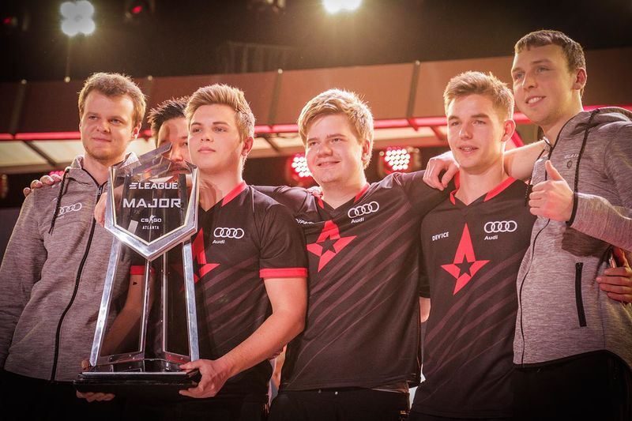
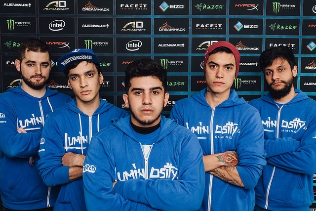
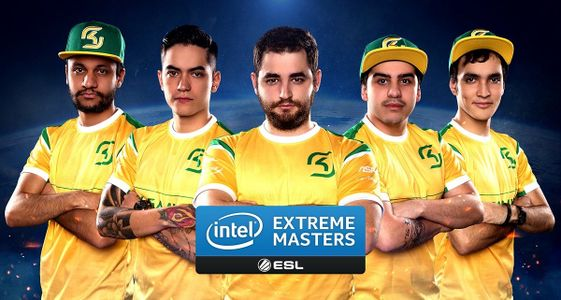

Fnatic é uma organização profissional britânica de esportes eletrônicos. Fundada em 23 de julho de 2004, a organização tem sido um dos pilares das cenas de Counter-Strike, hospedando principalmente escalações suecas. Eles foram notavelmente a primeira organização a vencer três Majors, tendo vencido o DreamHack Winter 2013 inaugural, ao lado do ESL One: Katowice 2015 e ESL One: Cologne 2015.
JW · flusha · pronax · KRIMZ · olofmeister
Astralis 2018-2019

Astralis é uma organização dinamarquesa de e-sports fundada em janeiro de 2016. É parcialmente propriedade de jogadores da antiga escalação dinamarquesa Team SoloMid/Team Questionmark. Os direitos do nome Astralis foram obtidos dos fundadores originais da equipe finlandesa de Counter-Strike. É o primeiro e único time do mundo a vencer três Major's em sequência.
Xyp9x ∙ Kjaerbye ∙ dupreeh ∙ dev1ce ∙ gla1ve
LG 2015 ~ SK 2016


Luminosity Gaming (muitas vezes abreviado para LG) é uma organização canadense de esportes eletrônicos. Foi fundada em fevereiro de 2015 por Steve Maida. A Luminosity Gaming se sagrou campeã mundial de CSGO em 2015, vencendo a MLG Columbus 2016 - o primeiro major vencido por uma equipe brasileira na versão moderna do FPS.
FalleN ∙ TACO ∙ coldzera ∙ fnx ∙ fer
SK Gaming é uma organização alemã de e-sports. Fundada em 1997 sob o nome de "Schroet Kommando" em Oberhausen, Alemanha, são conhecidas principalmente por seu enorme sucesso de CSGO. Mesmo time que em 2015 com a LG, foram responsáveis pela vitória do segundo e ultimo Major brasileiro